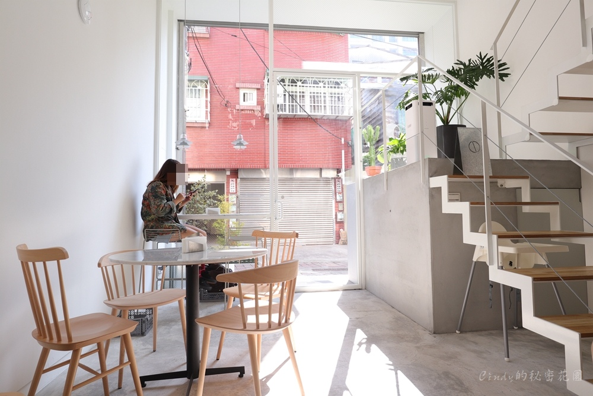

台南-中西區
「一府二鹿三艋舺」，台南中西區與安平區並列為全臺最早開發的地方，其中又有許多知名古蹟景點，像是「赤崁樓」、「台南孔廟」、「林百貨」等，絕對是每個遊客造訪台南必訪的區域，其中又有國華街、海安路等眾多美食，這篇我們幫大家整理了中西區景點、美食、住宿，不論是半日遊或一日遊，甚至住上一晚規劃兩天一夜都非常適合，就讓我們一起來趟古色古香的古蹟散步吧！
---中西區美食---
回首頁蜷尾家冰淇淋
2012年創立於台南，結合了台灣各地精選食材研發出台灣在地風味的霜淇淋甜點，不斷創新和打破大眾對冰品的既定印象，掀起了全台灣霜淇淋的瘋狂旋風！
地址:中西區正興街92號泰成水果行
新鮮哈密瓜做成超份量「哈密瓜盅冰」 台灣南部名氣響亮的【泰成水果店】
1935年開幕至今已經八十多年歷史，位置就在美食一級商圈的正興街上，
正對面就是紅到東京的「蜷尾家」，後方巷弄還藏身特色烤饅頭「賀HeR巷內食間」

乜料茶居
老闆是道地的香港人 而且店內還有貓貓喔~
店內的空間暗暗的帶點紅光 搭配很多收藏老件
有種詭譎迷幻的風格

月下獨酌
〈 月下獨酌 〉 很有情境的店名，位於民生路二段的巷弄裡，如果不是有熟門熟路的朋友帶路，很能發現這裡藏了間這麼有味道的酒吧~
台南就是這麼迷人，轉個彎就遇見小確幸！
月下獨酌改建的這棟百年老宅。在夜晚，散發文青又神秘的氛圍～
木蘭咖啡
台南甜點午茶「木蘭 Mulan」信義街上的文青咖啡館！店狗冷摳超可愛～ 「木蘭 Mulan」是間隱身在信義街上的文青咖啡館！店裡頭還有店狗冷摳超可愛～
台南市中西區信義街46巷9號2樓沼澤餐飲部
沼澤marsh是這兩年台南甜點界的新星之一，這個結合了陶藝、甜點的複合式空間，每到假日就幾近滿座 說到沼澤，得從幾年前在台北很熱門的甜點「河床工作室」說起 當年河床結束營運後，創立河床的主廚亨利，2017年在台南成立了「海丘」 2019年隨著海丘租約到期停業後，同年「沼澤」誕生，讓喜歡亨利甜點的人，又能繼續享受到好甜點
台南市中西區西寧街28號2樓移動的鍋子
移動的鍋子，一間一星期只營業三天的甜點店，一開店幾乎就秒滿。位在孔廟周邊的巷弄裡，10月份才剛開店，就成為IG上熱門的下午茶甜點店。
台南市中西區開山路122巷62號 山湃
台南深夜咖啡【山湃】已半露天的用餐空間搭配上燈飾，營造出有點露營風的氛圍感。 剛好最近比較有秋意，晚上涼涼的，還挺舒適。 但開放的空間，當天走訪時有不少人在抽菸，若是比較忌諱煙味的朋友，建議斟酌後再前往囉!
台南市中西區開山路3巷56號BELONGINN
老宅咖啡廳「BELONGINN」，樓上好像還是民宿，下午四點半才開始營業，開到半夜十二點，老房子本身就很有味道外， 裡頭的裝潢擺設也很有復古的風格，而且可以帶寵物，只要不落地就好，甜點咖啡都很棒，來了不會後悔！台南深夜咖啡廳
台南市中西區神農街80號壹井吧
壹井吧！入口隱密但找到門走進去， 酒吧環境完全顛覆所有人的刻板印象！ 如西餐分成前菜、主餐與甜點的酒單 充滿創意，調酒選項多且表現不俗， 不少酒客來過都給予不錯的評價！
台南市中西區永福路一段64號B
太古taikoo
太古taikoo 位在台南市市中心的神農老街裡，保留老街老房子原有的結構並融入西洋老傢俱，傳承了它們的故事和歷史容貌 太古taikoo 將世界各國的不同文化、不同時代與台灣的老屋和歷史結合呈現出新的樣貌 來到太古taikoo除了有各式調酒和比利時啤酒外，有舒服的空間和珍藏的傢俱老物與你們分享
台南市中西區神農街94號蘿拉冷飲部
位於台南中西區的Lola蘿拉冷飲店是一間非常酷的酒吧兼餐廳，老闆和闆娘很酷卻很友善， 調酒我覺得算是非常便宜的，而且食物也好吃，那個麻婆豆腐蛋包飯讓我朝思暮想啊～店內也會播放電影、舉辦活動、放好聽的舊搖滾樂，我很喜歡這個空間
台南市中西區信義街110號江水號
台南大菜市國華街有許多小吃與平價美食林立，而民國20年開業的江水號，已是近90年的老店。簡單的八寶冰、芋頭冰、鳳梨冰、綠豆牛奶冰等，是伴隨著不少在地人成長的回憶。 桌前一盤盤餡料，尤其是那滿滿的芋泥，很是吸引人，因此生意很好，也曾被食尚玩家報導過。
台南市中西區國華街三段27號永記虱目魚丸
短暫休息一陣子的台南『永記虱目魚丸』，最近重新開始營業，吸引不少饕客前往回味這充滿膠質的肉燥飯和每天早上現製的虱目魚肚、魚皮、魚丸、粉蒸、肉餃， 不僅是在地人相當喜愛，也吸引不少觀光客前往朝聖，而重新裝潢的永記店內的環境也變得更舒適些。
台南市中西區開山路82之1號六千牛肉湯
如果你是第一次來台南的觀光客，要喝上一碗牛讓湯，身邊一定很多朋友推薦六千牛肉湯！而且要早起凌晨4點排隊拿號碼牌才喝得到第一鍋湯的輕甜美味！
台南市中西區海安路一段63號海之味食堂
府前路一直往前走到東門圓環就會看到復興市場，市場裡面有很多厲害的美食，裡面更有一家內行人才知道的美食-海之味食堂隱身在復興市場，但懂吃愛吃的人就知道復興市場有這家好吃的美食！
台南市中西區府前路一段31號冰鄉
府城40年老冰果店有四季流轉的香甜滋味、時節輪替的人潮景觀，「冰鄉」每逢推出季節限定冰品便會造成誇張的排隊人潮，無論是夏季的芒果牛奶冰、冬天的草苺牛奶冰，還有那實在難以碰上的荔枝冰， 視覺與味覺充滿高爽度，滿滿的芒果、滿滿的草莓鮮果淹沒理性，不管要等待1小時、3小時都願意，心悅誠服於沁涼的水果剉冰。
台南市中西區民生路一段160號懷舊小棧
台南市五妃廟對面有家外貌古樸的小吃店『懷舊小棧』，是老闆倆夫婦用心經營，已邁入第十一個年頭；料多實在及濃郁香甜的豆腐冰已漸漸打響名號， 三五成群的學生是常客，甚至有人從外地慕名而來...
台南市中西區五妃街206號太陽牌冰品
每次到台南市區，炎熱的夏天總會想要來這間《太陽牌冰城》報到。 五十年老店的超人氣冰店，喜歡吃冰的朋友，來到台南您絕對不能錯過這間! 台南的鄉親朋友應該都知道這間好吃的冰店，如果您來台南玩，沒有吃到這間就太可惜啦!
台南市中西區民權路一段41號阿卿杏仁茶
位於保安路上的阿卿杏仁茶，是許多政商名流愛喝的飲品，其杏仁茶以新疆的甜杏仁和台東蓬萊米磨漿熬煮，不添加香精，口感濃稠香醇，是招牌商品。夏天才賣的綠豆饌，也是深受食客推薦的美味。
台南市中西區保安路82號回頂端